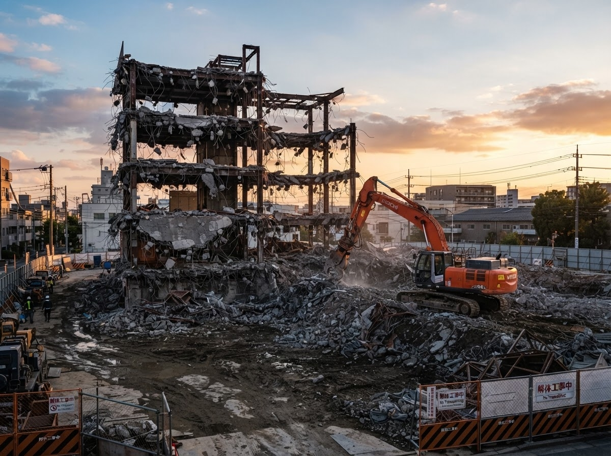
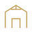
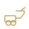

SPECIAL DEMOLITION
難易度の高い現場にも、確かな技術で対応します。
狭小地・高所・プラント・地下構造物など、高度な技術と豊富な経験が求められる現場でも、安全・確実・高品質な解体を実現します。
一般的な解体では対応が難しい、特別な技術・計画・設備を必要とする解体工事のことを指します。

商業施設・店舗・オフィス・学校・病院など、営業や稼働を継続したままの解体に対応します。
鉄塔基礎・RC基礎・機械基礎・地中梁・地中埋設物など、重機や特殊工法を用いた解体・撤去を行います。

生産ライン・タンク・ボイラー・配管・ダクト・コンベアなど、専門知識を要する設備解体に対応します。
重機が入らない狭小地や、高所・吹抜けなどの高難度な現場でも、安全第一で解体を行います。
事前調査からレベルに応じた適切な対策・除去・処理まで、法令を遵守した安全な解体工事を行います。
建物の一部のみを解体する部分解体や、改修に伴う解体を構造を理解した上で適切に施工します。
吹抜け・高層部・煙突・サイロなど、特殊足場や重機を駆使し、安全・確実に解体を行います。
鉄塔・基地局・橋梁・発電設備・通信設備など、インフラ関連の特殊解体にも対応します。
現場ごとに最適な計画を立案し、近隣・環境に配慮した施工を徹底。
無事故・無災害を最優先に、信頼される解体工事をお約束します。